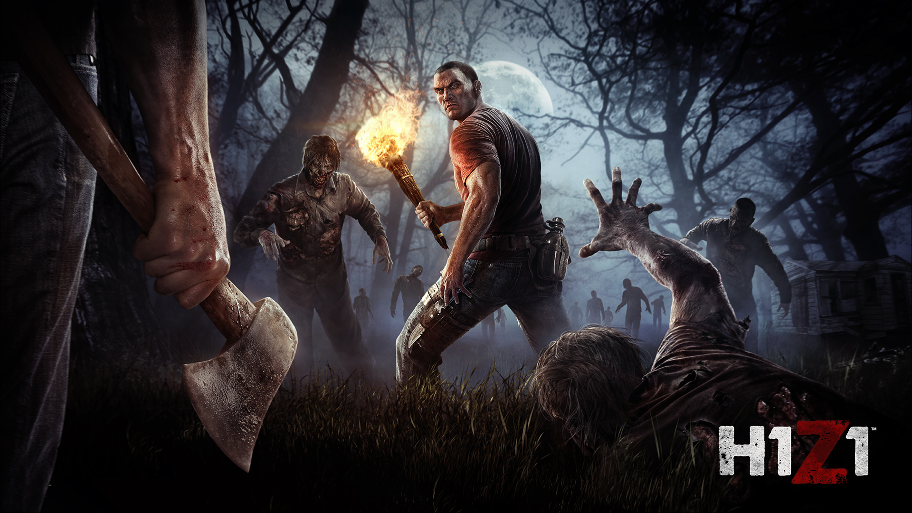
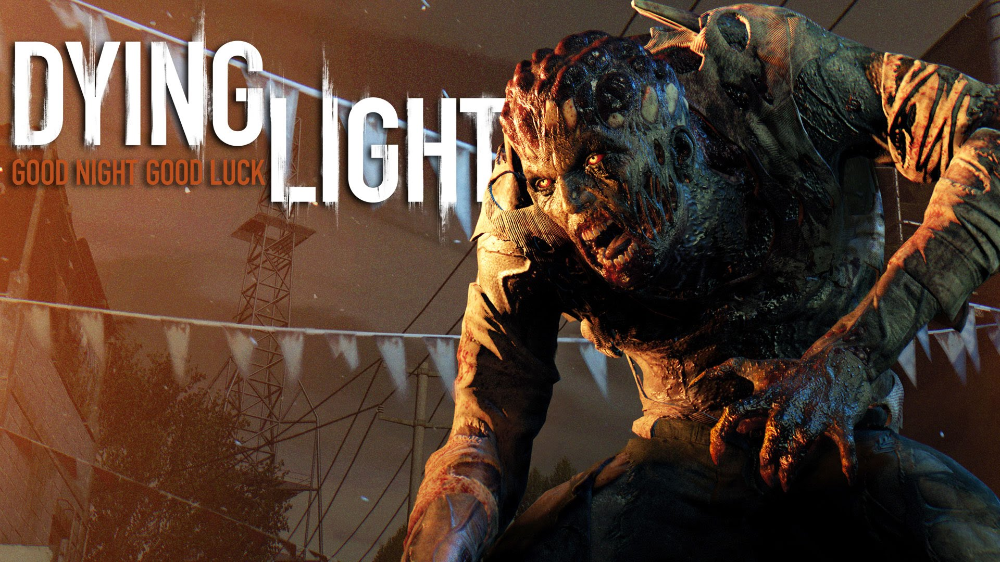

H1Z1: Just Survive to sandboksowa gra MMO z elementami survivalu, wpisująca się w popularny nurt produkcji z gatunku Massive Multiplayer Online, osadzonych w realiach apokalipsy zombie. W tym wypadku nie mamy jednak do czynienia z kolejnym tytułem niezależnym, ale produkcją dużego studia Daybreak Game Company, znanego wcześniej pod nazwą Sony Online Entertainment i mającego na swoim koncie tak popularne serie, jak Planetside czy EverQuest. Gra dystrybuowana jest w modelu tradycyjnym z opcjonalnymi mikropłatnościami, za pomocą których możemy nabywać szereg przydatnych elementów ekwipunku.

Paladins: Champions of the Realm to przeznaczona na pecety sieciowa strzelanka fantasy. Zabawa sprowadza się do toczenia multiplayerowych bitew, w których dwie maksymalnie sześcioosobowe drużyny walczą o kontrolę nad dużymi otwartymi mapami przy pomocy napędzanej magią broni palnej. Akcja osadzona została w świecie fantasy, którego kształt trochę odbiega od tego, co standardowo otrzymujemy w większości gier. W stworzonej przez studio autorów krainie istnieje bowiem zaawansowana technologia, w tym karabiny i pojazdy, ale wszystkie zdobycze techniki napędzane są magią. Fabuła nie odgrywa tutaj jednak dużej roli i zamiast tego Paladins: Champions of the Realm koncentruje się na sieciowych bitwach pomiędzy niewielkimi grupami graczy.

Dying Light to gra akcji z otwartym światem, utrzymana w klimatach survival horroru. Tytuł opracowało polskie studio Techland. Jest to swoisty miks Dead Island, produkcji tego samego zespołu, oraz Mirror’s Edge od twórców serii Battlefield. Akcja gry została ukazana z perspektywy pierwszej osoby. Wcielamy się w niejakiego Kyle’a Crane’a, trafiając do miasta Harran, wzorowanego na Rio de Janeiro, pełnym charakterystycznych faweli. Ludność metropolii została zainfekowana tajemniczym wirusem, który błyskawicznie zmienił wszystkich w zombie. Twórcy gry wykorzystali tutaj motyw zbliżony do tego znanego z filmu Jestem Legendą z Willem Smithem w roli głównej – w ciągu dnia zombie są mało aktywne, ale w nocy uaktywniają się ich groźniejsze mutacje. W związku z tym rozgrywka dzieli się na dwie części - gdy jest jasno, swobodnie eksplorujemy otoczenie, poszukujemy surowców i broni, a gdy nastaje noc, desperacko bronimy się przed agresywną hordą.

Dying Light to gra akcji z otwartym światem, utrzymana w klimatach survival horroru. Tytuł opracowało polskie studio Techland. Jest to swoisty miks Dead Island, produkcji tego samego zespołu, oraz Mirror’s Edge od twórców serii Battlefield. Akcja gry została ukazana z perspektywy pierwszej osoby. Wcielamy się w niejakiego Kyle’a Crane’a, trafiając do miasta Harran, wzorowanego na Rio de Janeiro, pełnym charakterystycznych faweli. Ludność metropolii została zainfekowana tajemniczym wirusem, który błyskawicznie zmienił wszystkich w zombie. Twórcy gry wykorzystali tutaj motyw zbliżony do tego znanego z filmu Jestem Legendą z Willem Smithem w roli głównej – w ciągu dnia zombie są mało aktywne, ale w nocy uaktywniają się ich groźniejsze mutacje. W związku z tym rozgrywka dzieli się na dwie części - gdy jest jasno, swobodnie eksplorujemy otoczenie, poszukujemy surowców i broni, a gdy nastaje noc, desperacko bronimy się przed agresywną hordą.

Resident Evil VII: Biohazard to wydana na pecety przygodowa gra akcji, należąca do kategorii określanej mianem survival horroru. Poprzednie dwie odsłony tej niezwykle znanej serii skręciły mocno w stronę bardziej efektownej rozgrywki, co odbiło się na klimacie grozy. Siódemka stanowi powrót do korzeni marki. Nie znaczy to jednak, że twórcy z wewnętrznego studia firmy Capcom postawili wyłącznie na oldskulowe rozwiązania. Autorzy wzięli kluczowe elementy survival horroru, takie jak ciężki klimat, wysoki poziom trudności i zawsze zbyt małe zapasy amunicji, ale zrealizowali je w nowoczesnym wydaniu, oferując widok pierwszoosobowy i rozbudowane sekcje eksploracyjne. Resident Evil VII: Biohazard zostało zapowiedziane na targach E3 2016, gdzie zmiana perspektywy i nacisk na elementy grozy spotkały się z ciepłym przyjęciem prasy oraz fanów. Wydanie na pecety jest zdecydowanie najładniejszą wersją gry. Firma Capcom pozwoliła bowiem graczom komputerowym na ustawienie opcji graficznych niedostępnych na konsolach. Natomiast wadą edycji PC, w porównaniu z tą z PlayStation 4, jest brak wsparcia dla technologii wirtualnej rzeczywistości.